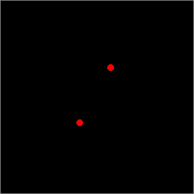

تعتبر الأنظمة النجمية الثنائية و المتعددة منها شائعة كثيرا في الكون. ما يقرب نصف النجوم في الكون تتواجد في مجموعات و أنظمة نجمية متعددة نجمين فأكثر. تساعدنا هذه الصفحة في فهم المدارات النجمية لنظام نجمي مزدوج أو ثلاثي أو رباعي المكونات. هذه الرسومات المتحركة تظهر لنا أنظمة نجمية مثالية على اعتبار أن كتل النجوم موحدة و متساوية. إن الأنظمة النجمية الحقيقية تحتوي مكونات نجمية مختلفة الكتل و على مسافات متفاوتة.
يمينا يمكننا رؤية نظام نجمي مزدوج مثالي. حيث يتبع كل نجم مدارا بيضاويا و يكون مستقرا في دورانه حول مركز كتلة مشترك. أما يسارا فنجد مثالا لنظام نجمي مزدوج حيث المكونين يتبعان مدرا دائريا مثاليا حول بعضهما البعض.
|  | |
| نظام نجمي مزدوج | نظام نجمي مزدوج دائري المدار |
إلى اليمين يمكننا رؤية نظام نجمي ثلاثي مثالي يدور فيه نجم ثالث حول نجمين الأول و الثاني. و يسارا لدينا نظام نجمي غير عادي ثلاثي غريب تدور فيه النجوم حول بعضها فيما يشبه مدارها بشكل ثمانية و تؤكد النماذج الحاسوبية أن مثل هذه المدارات تبقى مستقرة لبلايين السنين! و لم يستطع أحد إلى الوقت الحالي من إيجاد نظام نجمي شبيه على أرض الواقع ( يذكر أن عددا صغيرا من الفلكيين بحث عن مثل هذه الأنظمة النجمية) و لربما قد نجد مستقبلا و في مكان ما من المجرة نظاما نجميا ثلاثيا كهذا.
| نظام نجمي ثلاثي | مصور لنظام نجمي ثلاثي و مدارات تشبه ثمانية مقلوبة . |
إلى اليمين يمكننا رؤية نظام نجمي رباعي مكون من زوج من النجوم المزدوجة تدور حول مركز كتلة مشترك بينها. و إلى اليسار يمكن رؤية نظام نجمي رباعي آخر حيث يوجد نجمان قريبان من بعضهما يدوران حول بعضهما الآخر و بسرعة، و يدور حول هذين النجمين نجم ثالث كما لو انه نظام ثلاثي . و هذه الثلاثية يدور حولها نجم رابع على مسافة بعيدة منها.
| نظام نجمي رباعي المكونات | نظام نجمي رباعي المكونات |